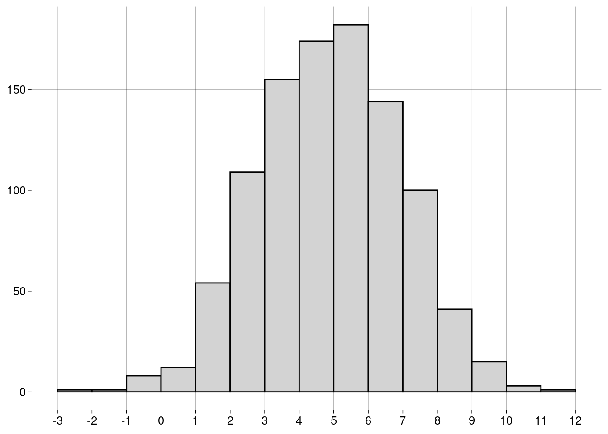

Capítulo 6 Medidas
6.2 Medidas de centralidade
6.2.1 Média
-
A média de uma população é escrita como \(\mu\), e é definida como \[\mu = \frac{\sum_{i=1}^N x_i}{N}\]
\(\sum_{i=1}^N x_i\) é a soma de todos os dados da população.
\(N\) é a quantidade de elementos na população.
-
A média de uma amostra é escrita como \(\bar x\), e é definida como: \[\bar x = \frac{\sum_{i=1}^n x_i}{n}\]
\(\sum_{i=1}^n x_i\) é a soma de todos os dados da amostra.
\(n\) é a quantidade de elementos na amostra.
O cálculo é essencialmente o mesmo. Só mudam os símbolos: \(N\) versus \(n\), e \(\mu\) versus \(\bar x\).
6.2.2 Mediana
Já aprendemos sobre a mediana na seção sobre boxplots.
A idéia é que, depois de ordenar os dados, \(50\%\) dos dados estarão à esquerda da mediana, e \(50\%\) à direita.
A mediana não é tão sensível a outliers quanto à média.
6.2.3 Moda
A moda é o valor mais frequente do conjunto de dados.
Pode haver mais de uma moda.
Não existe uma função para a moda em R base. Por quê?
Por incrível que pareça, é complicado definir a moda de forma a conseguir resultados interessantes.
-
Por exemplo, vamos definir um conjunto de \(1000\) valores numéricos distribuídos normalmente4, com média igual a \(5\) e desvio-padrão5 igual a \(2\):
normal <- rnorm(1000, mean = 5, sd = 2) -
O histograma dos nossos dados é
 -
Vamos calcular a moda com a função
mfv(most frequent value), do pacotemodeest:# Pacote com funções para calcular modas library(modeest) # Por causa de um bug na função mfv, # precisamos de números com ponto decimal # (em vez de vírgula): options(OutDec = '.') mfv(normal)## [1] -1.721569890 -1.693730745 -1.556347567 -1.186897349 -0.769191333 -0.034447886 ## [7] -0.023977724 0.008186589 0.033105914 0.168789177 0.444810310 0.618236212 ## [13] 0.654539565 0.737647621 0.766658535 0.779275768 0.782406306 0.804969709 ## [19] 0.843391016 0.906396588 0.926544147 0.939755174 0.955531572 1.056469516 ## [25] 1.112778316 1.118465721 1.123732587 1.162640048 1.168611744 1.242610068 ## [31] 1.246675671 1.249307875 1.262371633 1.288738311 1.332893289 1.337615046 ## [37] 1.444552345 1.471166811 1.483169119 1.486200334 1.497655735 1.569963675 ## [43] 1.589270111 1.614193768 1.632178942 1.642475843 1.648169664 1.677953919 ## [49] 1.688633442 1.689634510 1.734128692 1.744235270 1.747849530 1.784141476 ## [55] 1.844258674 1.850534157 1.852706152 1.874911197 1.879418276 1.913162604 ## [61] 1.921262115 1.922313922 1.926879909 1.932617531 1.940415728 1.958755567 ## [67] 1.978046145 1.994042662 2.030168736 2.078526909 2.078906374 2.089955344 ## [73] 2.170693540 2.178350818 2.182033172 2.208512557 2.209781541 2.212297206 ## [79] 2.217574161 2.227209156 2.259601445 2.260970315 2.264503971 2.264815594 ## [85] 2.281214562 2.287679845 2.296132688 2.296579430 2.296585860 2.306665795 ## [91] 2.315863720 2.316813609 2.327945963 2.334353921 2.336326712 2.345809620 ## [97] 2.357945326 2.370867167 2.371972331 2.373299021 2.393766564 2.399071918 ## [103] 2.403306482 2.405346104 2.416303252 2.435246689 2.464452121 2.479642556 ## [109] 2.482195911 2.502503788 2.530214649 2.547374250 2.571673764 2.581982743 ## [115] 2.589940284 2.592786766 2.611911329 2.629424774 2.631015336 2.633277359 ## [121] 2.633772535 2.648433056 2.650660719 2.651437774 2.656886328 2.662633946 ## [127] 2.662647136 2.669688068 2.673555506 2.675911160 2.700618469 2.724176187 ## [133] 2.777750873 2.779513732 2.798482438 2.815352547 2.822483763 2.823737126 ## [139] 2.824151134 2.826277621 2.827851791 2.828312388 2.829797161 2.832198804 ## [145] 2.840249851 2.843083324 2.848067406 2.848153827 2.853451449 2.860873385 ## [151] 2.868281771 2.874914663 2.885219895 2.896241234 2.897741714 2.899453805 ## [157] 2.932035825 2.963085652 2.983888691 2.985359428 2.993063316 2.993302664 ## [163] 3.002301751 3.005528567 3.021093591 3.027003268 3.032116374 3.033400642 ## [169] 3.052822683 3.057033396 3.060977738 3.096847938 3.097512143 3.099869345 ## [175] 3.121208929 3.133099120 3.139882626 3.142380643 3.150105267 3.161430732 ## [181] 3.166935508 3.167657128 3.184074015 3.196884676 3.198121787 3.200201175 ## [187] 3.223923184 3.246284541 3.253484312 3.253671437 3.262437656 3.264268629 ## [193] 3.295533656 3.295902952 3.302041177 3.308458468 3.310576110 3.311344890 ## [199] 3.315743855 3.317143107 3.322710710 3.332555081 3.337430782 3.341467501 ## [205] 3.341618059 3.346192811 3.366276639 3.369533161 3.372647759 3.375880001 ## [211] 3.376087737 3.382323201 3.388020111 3.409457342 3.417562536 3.427704490 ## [217] 3.451495470 3.466636708 3.470072850 3.477381602 3.481712047 3.489061027 ## [223] 3.494523195 3.495721457 3.498135789 3.502016072 3.507631133 3.509626031 ## [229] 3.513501433 3.534673976 3.540406454 3.556921693 3.559794683 3.577864978 ## [235] 3.585337336 3.585801462 3.594707000 3.596005697 3.599495510 3.606917862 ## [241] 3.618564752 3.641247549 3.642045395 3.646812469 3.648385529 3.663917807 ## [247] 3.675114849 3.681005408 3.682220998 3.711537757 3.718440224 3.727672564 ## [253] 3.730569264 3.732871893 3.742271909 3.747173221 3.768440782 3.778922659 ## [259] 3.781941441 3.783209774 3.783601139 3.784018883 3.789804853 3.796560046 ## [265] 3.801301928 3.811501638 3.814053968 3.817586897 3.819906443 3.823166746 ## [271] 3.823476244 3.826662572 3.837796616 3.840163659 3.843484059 3.863466571 ## [277] 3.880661432 3.903140493 3.922083796 3.922316158 3.922959089 3.944520810 ## [283] 3.948324246 3.959910718 3.960931391 3.962487124 3.969951714 3.981028907 ## [289] 3.986017537 3.986961570 3.992063873 3.997260531 4.005643841 4.006160099 ## [295] 4.015668994 4.017862587 4.018566467 4.020407968 4.021091558 4.036048007 ## [301] 4.038689604 4.044529715 4.058761759 4.059011915 4.059064512 4.069125855 ## [307] 4.080551061 4.084199377 4.089778557 4.092771003 4.097105912 4.105100677 ## [313] 4.106325602 4.113017852 4.117820420 4.131721996 4.135062426 4.135772734 ## [319] 4.140725676 4.156695715 4.160780607 4.172679463 4.173293852 4.174620791 ## [325] 4.180669969 4.182491657 4.185758969 4.194535625 4.195668627 4.199319780 ## [331] 4.207158386 4.208053774 4.209963519 4.214959751 4.221939237 4.226220538 ## [337] 4.231486473 4.254325562 4.258032005 4.266118876 4.279937577 4.286710990 ## [343] 4.289911052 4.290560393 4.293802107 4.299104819 4.300162952 4.316425027 ## [349] 4.318823353 4.330831656 4.336816251 4.338380299 4.346132182 4.350863988 ## [355] 4.358496887 4.360197678 4.361381860 4.378984816 4.379479392 4.384643672 ## [361] 4.389404899 4.392757979 4.392767480 4.395263034 4.409898049 4.425507397 ## [367] 4.426277998 4.427058261 4.433804915 4.438638660 4.438735088 4.446092218 ## [373] 4.446294134 4.452840606 4.453830863 4.457590283 4.469741525 4.472910403 ## [379] 4.482430462 4.500513319 4.500919825 4.502183752 4.508127074 4.518279520 ## [385] 4.519664449 4.520470561 4.523129154 4.532010206 4.533029397 4.540972449 ## [391] 4.541177055 4.547763864 4.549207455 4.552915724 4.554903660 4.557836148 ## [397] 4.562097700 4.563716594 4.579955857 4.582577168 4.591675998 4.593386836 ## [403] 4.606314826 4.609214701 4.611623749 4.611848722 4.615484615 4.618766024 ## [409] 4.620010727 4.624762890 4.631501583 4.659417729 4.664822540 4.669804519 ## [415] 4.674946486 4.678015682 4.681268928 4.693232769 4.693478855 4.699871025 ## [421] 4.727321221 4.740196031 4.749377594 4.749551158 4.755781177 4.756872199 ## [427] 4.762836024 4.771039493 4.771962773 4.772134707 4.772827082 4.787569920 ## [433] 4.795746745 4.797686018 4.803680614 4.804739364 4.807123268 4.807164761 ## [439] 4.807400189 4.810062776 4.823425147 4.827603260 4.838630795 4.851541040 ## [445] 4.852751895 4.856549840 4.860795714 4.863022445 4.869039555 4.870092681 ## [451] 4.872268544 4.873852905 4.876377511 4.900684090 4.916006517 4.916278777 ## [457] 4.918754933 4.922299224 4.922938677 4.927720751 4.932863304 4.950897274 ## [463] 4.951203654 4.951289340 4.952333312 4.956213506 4.956851996 4.959462408 ## [469] 4.963961432 4.969571862 4.970764287 4.976324402 4.977290269 4.978459015 ## [475] 4.980691331 5.002476791 5.010075597 5.010291958 5.014368331 5.025785258 ## [481] 5.029524697 5.032803962 5.033437470 5.035787563 5.038875708 5.043394208 ## [487] 5.046344609 5.053809324 5.055837874 5.059508825 5.066146528 5.068249135 ## [493] 5.072555004 5.083458856 5.085480979 5.086476976 5.093844427 5.100274838 ## [499] 5.103708800 5.104107031 5.104986050 5.114231701 5.118127570 5.125726630 ## [505] 5.128775025 5.128790917 5.132969387 5.133629788 5.140482170 5.140522147 ## [511] 5.140658427 5.158905233 5.162883030 5.168241736 5.178372181 5.181620803 ## [517] 5.184649583 5.193875188 5.195496119 5.197851667 5.198291149 5.206203573 ## [523] 5.210862206 5.212204926 5.214019866 5.216700420 5.218088709 5.219843941 ## [529] 5.219870624 5.226602707 5.232393266 5.232808695 5.235067435 5.236829000 ## [535] 5.239201880 5.239384201 5.239541819 5.240125927 5.250335566 5.251339092 ## [541] 5.262894610 5.265163269 5.275363334 5.278805571 5.280556740 5.281238486 ## [547] 5.288256631 5.294236316 5.300400012 5.303179997 5.316719894 5.318611072 ## [553] 5.322558488 5.333313312 5.333793311 5.334353841 5.335184199 5.352159806 ## [559] 5.355871145 5.367649461 5.379217141 5.380756539 5.382906252 5.386397214 ## [565] 5.406133415 5.419138585 5.422040368 5.426440357 5.436364331 5.438300908 ## [571] 5.440665024 5.455316079 5.459998891 5.462411035 5.466333152 5.471923956 ## [577] 5.476309544 5.482438706 5.488212694 5.494754751 5.497514042 5.498968195 ## [583] 5.501653104 5.509077697 5.518442917 5.520819872 5.528826926 5.531950245 ## [589] 5.537032865 5.537624899 5.538100105 5.540007074 5.549303180 5.562973740 ## [595] 5.564763648 5.568416111 5.571710021 5.572262397 5.587776479 5.589730499 ## [601] 5.592240383 5.605976391 5.608364318 5.614568191 5.614695344 5.625150850 ## [607] 5.628164563 5.631055641 5.636393183 5.641056473 5.642016229 5.646359426 ## [613] 5.646898434 5.648600065 5.654310894 5.654744513 5.669685539 5.671492471 ## [619] 5.677861728 5.678530422 5.678988442 5.681901677 5.683106976 5.688868309 ## [625] 5.689900628 5.696982448 5.699948689 5.702064111 5.712110152 5.719601586 ## [631] 5.733253606 5.739498855 5.740418849 5.740913977 5.747171347 5.750346842 ## [637] 5.756693659 5.763538381 5.783777653 5.783974879 5.786493163 5.788740306 ## [643] 5.796555144 5.796601088 5.799625420 5.802047895 5.809203485 5.810884231 ## [649] 5.819865412 5.820838375 5.822655895 5.831291532 5.838075179 5.845245631 ## [655] 5.847259412 5.848583729 5.849754558 5.852650922 5.859544469 5.861369799 ## [661] 5.863262384 5.873495102 5.889518377 5.893403528 5.898380317 5.906034099 ## [667] 5.909082664 5.910543818 5.915274314 5.934512430 5.945692438 5.951026219 ## [673] 5.968108118 5.970090021 5.975664854 5.977081317 5.978630549 5.986909001 ## [679] 5.991825645 5.994170557 5.997585252 6.013382013 6.013633422 6.015734546 ## [685] 6.020046540 6.028736615 6.042014585 6.042422518 6.050930220 6.054554959 ## [691] 6.062357869 6.065455698 6.069270182 6.072280076 6.075852148 6.079541989 ## [697] 6.081646549 6.089801961 6.092277521 6.092516444 6.094578891 6.097675409 ## [703] 6.114736929 6.114889260 6.115913583 6.117262041 6.123398549 6.128803751 ## [709] 6.138024800 6.141414187 6.142692381 6.147225995 6.172058176 6.196141227 ## [715] 6.201320537 6.216203872 6.229253212 6.252882094 6.254935872 6.258016842 ## [721] 6.280664748 6.282075043 6.282517777 6.288400380 6.292509379 6.296797366 ## [727] 6.303074180 6.303928673 6.319516481 6.321673053 6.325539022 6.340897547 ## [733] 6.346183345 6.349995773 6.366003435 6.366527253 6.369726039 6.377198328 ## [739] 6.382844211 6.394722813 6.412151372 6.415745201 6.420018442 6.430956479 ## [745] 6.451306618 6.454807392 6.484679600 6.487055466 6.490308331 6.504914678 ## [751] 6.517343402 6.517943320 6.521633839 6.523980643 6.524566516 6.530075838 ## [757] 6.530079659 6.533814327 6.549385054 6.554916733 6.561338182 6.561693880 ## [763] 6.572277439 6.587896872 6.588731042 6.597674019 6.598577070 6.599736886 ## [769] 6.603653770 6.609588045 6.612055412 6.630535075 6.637181456 6.642399962 ## [775] 6.643964920 6.657023995 6.673640927 6.687030636 6.691067873 6.692421511 ## [781] 6.695883595 6.714375109 6.715975643 6.722250089 6.723684085 6.725911549 ## [787] 6.727700222 6.729072059 6.739961441 6.744257498 6.750742600 6.756718240 ## [793] 6.774703806 6.786682490 6.787974276 6.789478714 6.797383739 6.802404069 ## [799] 6.802759755 6.808256477 6.808968395 6.828905090 6.833568200 6.848628187 ## [805] 6.849945439 6.854102713 6.854598247 6.855428718 6.855501843 6.865791999 ## [811] 6.880953951 6.885497662 6.888529559 6.895184771 6.896349344 6.898343399 ## [817] 6.904051800 6.918823706 6.932612707 6.949932248 6.976838056 6.988402028 ## [823] 7.022502562 7.027494231 7.027905925 7.035036984 7.039120563 7.039454004 ## [829] 7.043077506 7.044296639 7.045338116 7.058813818 7.069933121 7.085280581 ## [835] 7.089485589 7.105940283 7.106275194 7.109176475 7.110622311 7.115220266 ## [841] 7.124422780 7.140324765 7.144684072 7.153484471 7.153743311 7.153825062 ## [847] 7.162131322 7.163709214 7.182412032 7.193023112 7.201927562 7.210383690 ## [853] 7.248880544 7.258437246 7.258531729 7.262995066 7.276676578 7.281009236 ## [859] 7.287533910 7.290528318 7.294867576 7.295352026 7.320492128 7.325067969 ## [865] 7.328668806 7.346858389 7.354085710 7.356635388 7.361497833 7.378958351 ## [871] 7.384023828 7.401648189 7.413160095 7.419141801 7.419487469 7.426465164 ## [877] 7.431299004 7.454063328 7.457166116 7.484349095 7.502244080 7.527209056 ## [883] 7.527843489 7.539360656 7.549611163 7.558020599 7.563307561 7.574964085 ## [889] 7.591932410 7.597107498 7.605680692 7.639175358 7.654304892 7.667139697 ## [895] 7.691709434 7.717090453 7.724260512 7.757213420 7.757716633 7.758673938 ## [901] 7.763633005 7.775532333 7.805895131 7.810878655 7.836131297 7.837039520 ## [907] 7.848885129 7.864483250 7.915609553 7.922741591 7.939982190 7.965510970 ## [913] 7.969536284 7.977853031 7.988911841 8.003872027 8.006287583 8.024417500 ## [919] 8.068159620 8.083312497 8.105153705 8.107103622 8.109390800 8.112733867 ## [925] 8.116045769 8.118170097 8.127422665 8.157550827 8.168930674 8.195944440 ## [931] 8.209279510 8.247149148 8.253632403 8.272306206 8.279078293 8.280602105 ## [937] 8.294621784 8.300395037 8.321993471 8.341506380 8.390871834 8.451247154 ## [943] 8.454507549 8.517775670 8.522096954 8.537336317 8.548417097 8.594503301 ## [949] 8.675128671 8.718725104 8.721513360 8.782210640 8.785501034 8.887790286 ## [955] 8.896321686 8.903771299 8.939272402 8.962646769 8.971373201 8.980152074 ## [961] 9.097913134 9.117722811 9.127201515 9.135209981 9.168777009 9.198603486 ## [967] 9.241526432 9.244377788 9.246913273 9.309417945 9.337185266 9.394023026 ## [973] 9.436446966 9.436951555 9.440181733 9.482632678 9.495705784 9.526204346 ## [979] 9.526308410 9.546303904 9.609461824 9.680997176 9.725671335 9.745730397 ## [985] 9.781650482 9.788900760 9.853187680 9.898144950 9.986894208 10.105228505 ## [991] 10.159355174 10.191187290 10.410594553 10.429076933 10.452183511 10.595330877 ## [997] 10.642403483 10.715690015 10.933089914 11.811505317# Voltamos para a vírgula como separador decimal: options(OutDec = ',') O que houve?!
O problema é que não há valores repetidos no conjunto de dados! Por isso, todos os \(1000\) valores são modais.
-
Uma maneira de evitar isto é definir a moda como o centro do intervalo mais curto que contém metade dos dados. Usamos a função
mlv(most likely value):moda <- mlv(normal, method = 'venter') moda## [1] 5,357545 -
Esta moda estimada pode nem estar no conjunto de dados:
moda %in% normal## [1] FALSE Mas o resultado de
mlv()é útil, pois nos diz que, embora não haja valores repetidos, valores próximos de \(5\) são mais frequentes, como mostra o histograma.
6.2.3.1 Exercícios
-
Arrendonde os valores no vetor
normalpara \(2\) casas decimais e ache a(s) moda(s)com a função
mfv, ecom a função
mlv, usando o métodoventer.
Considerando o histograma, qual das respostas você prefere? Por quê?
6.3 Formas de uma distribuição
- A forma do histograma mostra aspectos importantes da distribuição dos dados.
6.3.1 Distribuição Uniforme
-
Se o histograma tem todas as barras aproximadamente da mesma altura, dizemos que a distribuição é uniforme:

A distribuição uniforme não tem moda, já que todos os valores têm aproximadamente a mesma frequência.
6.3.2 Simetria
Se o histograma for simétrico (i.e., os lados esquerdo e direito são “espelhados”), dizemos que a distribuição é simétrica.
A distribuição normal do exemplo acima é simétrica.
A distribuição uniforme também é simétrica.
-
Para distribuições simétricas, a média, a mediana e a moda (quando existe e é única) são bem próximas.
-
Uma distribuição pode ser simétrica, mas ter duas (ou mais) modas diferentes:

Algumas distribuições não são simétricas, mas têm uma cauda longa à esquerda ou à direita.
Dependendo da cauda, as distribuições são chamadas de assimétricas à esquerda ou assimétricas à direita.
-
Um exemplo: receitas anuais (em milhões de dólares) de CEOs de grandes empresas:
## Rows: 500 ## Columns: 9 ## $ Rank <dbl> 1, 2, 3, 4, 5, 6, 7, 8, 9, 10, 11, 12, 13, 14, 15, 16… ## $ Name <chr> "John H Hammergren", "Ralph Lauren", "Michael D Fasci… ## $ Company <chr> "McKesson", "Ralph Lauren", "Vornado Realty", "Kinder… ## $ `1-Year Pay ($mil)` <dbl> 131,190, 66,650, 64,405, 60,940, 55,790, 51,525, 50,1… ## $ `5 Year Pay ($mil)` <dbl> 285,020, 204,060, NA, 60,940, 96,110, 100,210, 90,300… ## $ `Shares Owned ($mil)` <dbl> 51,9, 5010,4, 171,7, 8582,3, 21,5, 47,3, 128,2, 155,8… ## $ Age <dbl> 53, 72, 55, 67, 59, 57, 55, 59, 61, 60, 59, 56, 63, 5… ## $ Efficiency <dbl> 121, 84, NA, NA, 138, 36, 12, NA, 91, 131, 150, NA, 1… ## $ `Log Pay` <dbl> 8,117901, 7,823800, 7,808920, 7,784902, 7,746556, 7,7… -
Vamos usar apenas os nomes e os valores anuais:
-
Um histograma:
salarios %>% ggplot(aes(x = valor)) + geom_histogram(breaks = seq(0, 150, 2.5)) + scale_x_continuous(breaks = seq(0, 150, 10)) + labs(y = NULL)
É uma distribuição assimétrica à direita: a maior parte dos CEOs têm receitas anuais “baixas”, de menos de \(10\) milhões. À medida que examinamos valores maiores, a quantidade de CEOs vai diminuindo lentamente.
Observe que a longa cauda à direita “puxa” a média para um valor mais alto do que a mediana.
-
A moda, que corresponde à barra mais alta do histograma, é menor que a mediana (e que a média):
sumario <- salarios %>% summarise( moda = mlv(valor, method = 'venter'), mediana = median(valor), media = mean(valor) ) sumario -
Em um boxplot, também é possível detectar a assimetria pela grande quantidade de outliers em um extremo:
salarios %>% ggplot(aes(y = valor)) + geom_boxplot() + scale_x_continuous(breaks = NULL) + scale_y_continuous(breaks = seq(0, 150, 10))
Com distribuições assimétricas à esquerda, a situação se inverte: a média é menor que a mediana, que é menor que a moda.
6.4 Re-expressão
Muitas vezes, é recomendável transformar a escala dos dados para que uma distribuição assimétrica se torne simétrica.
-
No exemplo das receitas dos CEOs, podemos tomar os logaritmos dos valores, em vez dos valores:
salarios_log %>% ggplot(aes(x = log_valor)) + geom_histogram(bins = 20) + labs( x = TeX('$\\log_{10}$ valor'), y = NULL )## Warning: Removed 3 rows containing non-finite values (`stat_bin()`).
O logaritmo de um número na base \(10\) é, essencialmente, a quantidade de dígitos do número, vista como uma grandeza contínua.
Logaritmos negativos vêm de valores entre \(0\) e \(1\).
Logaritmo zero vem do valor \(1\).
Valores iguais ou menores que zero não têm logaritmo definido.
-
Por isso a mensagem de aviso sobre \(3\) valores removidos. São valores iguais a zero:
Uma vantagem desta escala logarítmica é que podemos entender melhor o histograma. Os dados não estão amontoados de um lado só.
6.5 Medidas de posição
6.5.1 Quantis
Na seção sobre boxplots, falamos sobre quantis, que são medidas de posição.
-
Em R, a função
quantilecalcula quantis de um vetor:## 0% 25% 50% 75% 100% ## 0,00000 3,88500 6,96750 13,36125 131,19000 -
Você pode passar frações entre \(0\) e \(1\) para
quantile. Por exemplo, para calcular o primeiro, o quinto, e o décimo percentis6 das receitas dos CEOs:## 1% 5% 10% ## 0,48695 1,48405 2,19400
6.6 Medidas de dispersão
Tão importantes quanto as medidas de centralidade são as medidas de dispersão (ou espalhamento).
Elas informam o quanto os dados variam.
6.6.1 Amplitude
Uma medida simples é a diferença entre o valor máximo e o valor mínimo.
-
Lembrando do nosso exemplo das idades dos alunos:
idades## [1] 20 20 20 20 20 20 21 21 21 21 22 22 22 23 23 23 23 24 24 65 -
A função
rangeretorna o mínimo e o máximo:range(idades)## [1] 20 65 -
A amplitude destes dados é, então
## [1] 45 A diferença de idade entre o aluno mais novo e o mais velho é de \(45\) anos, um valor alto, por causa do velhinho.
6.6.2 IQR
Na seção sobre boxplots, também falamos sobre o intervalo interquartil (IQR).
-
No boxplot, é a altura da caixa. Para as idades dos alunos:
idades %>% as_tibble() %>% ggplot(aes(y = value)) + geom_boxplot() + scale_x_continuous(breaks = NULL) + scale_y_continuous(breaks = seq(20, 70, 5))
-
O IQR é a diferença entre o primeiro e o terceiro quartis:
summary(idades)## Min. 1st Qu. Median Mean 3rd Qu. Max. ## 20,00 20,00 21,50 23,75 23,00 65,00## [1] 3IQR(idades)## [1] 3 Ou seja, os \(50\%\) centrais dos alunos têm idade entre \(20\) e \(23\) anos, um IQR de \(3\).
É uma variação pequena, porém mais fiel à realidade do que a amplitude, que é alta por causa do velhinho.
Quanto maior o IQR, mais espalhados estão os dados.
6.6.3 Variância
-
Agora, vamos trabalhar com os pesos (kg) e alturas (m) de um time de basquete:
medidas <- tibble( altura = .025 * c(72, 74, 68, 76, 74, 69, 72, 79, 70, 69, 77, 73), peso = 0.45 * c(180, 168, 225, 201, 189, 192, 197, 162, 174, 171, 185, 210) ) medidassummary(medidas$altura)## Min. 1st Qu. Median Mean 3rd Qu. Max. ## 1,700 1,744 1,812 1,819 1,863 1,975summary(medidas$peso)## Min. 1st Qu. Median Mean 3rd Qu. Max. ## 72,90 77,96 84,15 84,53 89,10 101,25 A variância é a maneira mais usada de medir o espalhamento em torno da média.
Para calcular a variância das alturas e a variância dos pesos, precisamos calcular valores intermediários.
-
O desvio de um valor é a diferença entre o valor e a média. O desvio pode ser positivo ou negativo.
d_medidas <- medidas %>% mutate( d_altura = altura - mean(altura), d_peso = peso - mean(peso) ) d_medidas -
Vamos calcular o desvio médio das alturas e o desvio médio dos pesos:
Não foi uma boa idéia. O desvio médio sempre é igual a zero.7 (O R pode mostrar algum valor diferente de zero por causa da precisão limitada dos números de ponto flutuante.)
-
Como resolver isto? Elevando os desvios ao quadrado:
Agora temos os desvios quadrados, que são todos positivos.
-
O desvio quadrado médio vai ser a variância:
Uma vantagem da variância é que outliers (que têm desvios quadrados maiores) contribuem mais do que elementos próximos à média (que têm desvios quadrados menores).
Uma desvantagem da variância é que a sua unidade é o quadrado da unidade dos valores.
Neste exemplo, as unidades são \(m^2\) e \(kg^2\)!
6.6.4 Desvio-padrão
É melhor trabalhar com a raiz quadrada da variância, que chamamos de desvio-padrão.
-
As unidades são as mesmas que as unidades dos dados.
-
Claro que o R tem funções para calcular isso:
varesd(standard deviation):medidas %>% summarize( altura_var = var(altura), altura_dp = sd(altura), peso_var = var(peso), peso_dp = sd(peso) ) Mas os valores são diferentes dos que calculamos. Por quê?
6.6.5 Definições
-
Para uma população com \(N\) elementos e média \(\mu\), a variância é
\[ \sigma^2 = \frac{\sum_{i=1}^N (x_i - \mu)^2}{N} \]
e o desvio-padrão é
\[ \sigma = \sqrt{\frac{\sum_{i=1}^N (x_i - \mu)^2}{N}} \]
-
Para uma amostra com \(n\) elementos e média \(\bar x\), a variância é
\[ s^2 = \frac{\sum_{i=1}^n (x_i - \bar x)^2}{n-1} \]
e o desvio-padrão é
\[ s = \sqrt{\frac{\sum_{i=1}^n (x_i - \bar x)^2}{n -1}} \]
Nós calculamos a versão populacional destas medidas.
R calcula a versão amostral destas medidas.
Reveja os cálculos e entenda a diferença.
Note, também, que as medidas populacionais são representadas por letras gregas — \(\mu\), \(\sigma^2\), \(\sigma\) —, enquanto as medidas amostrais são representadas por letras latinas — \(\bar x\), \(s^2\), \(s\).
Mais adiante no curso, você vai entender por que o denominador da variância amostral é \(n - 1\), em vez de \(n\).
Nada é por acaso, nem mesmo em Estatística.
6.6.6 Exercícios
Quando a variância e o desvio-padrão de um conjunto de dados são iguais a zero?
-
Mostre que o desvio médio de qualquer conjunto de valores é igual a zero.
Ou seja, considere o conjunto
\[ \{x_1, x_2, \ldots, x_n\} \]
e prove que
\[ \sum_{i = 1}^n (x_i - \bar x) = 0 \]
Manipule apenas as variáveis \(x_i\). Não use exemplos, pois eles não provam o enunciado geral.
Dica: lembre que \(\displaystyle \bar x = \frac{\sum_{i = 1}^n x_i}{n}\).
6.7 Coeficiente de variação
Em um conjunto de dados, o desvio-padrão é uma medida importante da variação dos dados.
Mas a unidade do desvio-padrão muda de um conjunto de dados para outro: alturas em metros, pesos em quilos etc.
Podemos eliminar as unidades expressando o desvio-padrão em termos da média.
O resultado é a fração \(\frac{\sigma}{\mu}\) (na população) ou \(\frac{s}{\bar x}\) na amostra.
Esta fração é o coeficiente de variação (CV).
O CV não tem unidades.
-
Para as alturas do exemplo dos jogadores de basquete:
A média das alturas é \(1{,}82\) metros.
O desvio-padrão das alturas é \(0{,}09\) metros.
O CV é aproximadamente \(0{,}0473\).
statip::cv(medidas$altura)## [1] 0,04729982Em outras palavras, para as alturas, um desvio-padrão corresponde a \(4{,}73\%\) da média.
-
Para os pesos:
A média dos pesos é \(84{,}53\) quilos.
O desvio-padrão dos pesos é \(8{,}31\) quilos.
O CV é aproximadamente \(0{,}0983\).
statip::cv(medidas$peso)## [1] 0,09834649Em outras palavras, para os pesos, um desvio-padrão corresponde a \(9{,}83\%\) da média.
Segundo estes valores, a variação dos pesos é cerca de \(2\) vezes maior do que a variação das alturas.
O coeficiente de variação sempre faz sentido para dados do nível racional (veja a definição) — i.e., dados onde o zero é absoluto.
Para dados apenas intervalares, o uso do CV pode levar a conclusões absurdas, como você terá chance de ver no exercício.
6.7.1 Exercícios
-
Considere o seguinte conjunto de temperaturas (em graus Celsius):
celsius <- c(0, 10, 20, 30, 40) -
E as mesmas temperaturas (em graus Fahrenheit):
fahrenheit <- 9 * celsius / 5 + 32 -
Calcule para cada um dos dois vetores acima:
A média,
O desvio-padrão,
O coeficiente de variação.
As temperaturas são as mesmas (apenas em unidades diferentes), mas os CVs são diferentes. Por quê?
-
Agora, convertemos as mesmas temperaturas para a escala Kelvin:
kelvin <- celsius + 273.15 -
E para a escala Rankine:
rankine <- fahrenheit + 459.67 -
Calcule para cada um dos dois vetores acima:
A média,
O desvio-padrão,
O coeficiente de variação.
-
Compare:
As médias de
celsiusekelvin,As médias de
fahrenheiterankine,Os desvios-padrão de
celsiusekelvin,Os desvios-padrão de
fahrenheiterankine,Os coeficientes de variação de
kelvinerankine.
Explique o que houve.
6.8 Escores-padrão
Para qualquer conjunto de dados, a unidade usada é uma escolha arbitrária.
Para alturas, por exemplo, podemos usar metros, centímetros, pés, polegadas etc.
A escolha de unidades é tão arbitrária que podemos escolher uma unidade (que dificilmente vai ter nome) que faça com que a média do conjunto de dados seja zero e que o desvio-padrão seja igual a \(1\).
Isto equivale a tomar, como unidade, o desvio-padrão acima da média.
Os valores, nesta nova unidade, são chamados de escores-padrão.
Dizemos que os valores foram padronizados.
Vamos usar as alturas dos jogadores de basquete.
-
Para fazer a altura média virar zero, basta subtrair, de cada altura, a altura média:
alturas <- medidas$altura mean(alturas)## [1] 1,81875## [1] 0 -
Para fazer o desvio-padrão ser igual a \(1\), basta dividir estes valores pelo desvio-padrão dos dados originais:
sd(alturas)## [1] 0,08602656## [1] 1 -
Tome, por exemplo, o seguinte jogador:
altura <- alturas[1] altura## [1] 1,8## [1] -0,217956Faça as contas: o valor da altura padronizada deste jogador significa que a altura dele está \(0{,}217956\) desvios-padrão abaixo da altura média.
-
No geral:
Se a média for \(\bar x\), e
Se o desvio-padrão for \(s\),
Os escores-padrão \(z_i\) vão ser \[ z_i = \frac{x_i - \bar x}{s} \]
-
Em R, a função
scalefaz isso:medidas <- medidas %>% mutate(altura_padronizada = scale(altura)[,1]) medidas %>% select(altura, altura_padronizada)mean(medidas$altura_padronizada)## [1] -0,000000000000000004610683sd(medidas$altura_padronizada)## [1] 1 A função
scalefoi feita para receber e retornar matrizes. Como estamos trabalhando com vetores, usamosscale(altura)[,1]para tomar apenas a primeira (e única) coluna do resultado.
6.8.1 Exercícios
Por que, quando calculamos as alturas deslocadas divididas pelo desvio-padrão das alturas, temos certeza de que a média dos valores resultantes não mudou?
Padronize os pesos dos jogadores de basquete.
Confira a média e o desvio-padrão dos pesos padronizados.
Crie um scatterplot de peso por altura.
Crie um scatterplot de peso padronizado por altura padronizada.
Compare os dois scatterplots. O que muda de um para outro?
6.9 Teorema de Tchebychev
Grosso modo, quanto mais alto o desvio-padrão, maior é a distância da média até os valores.
Ou seja, quanto menor o desvio-padrão, maior é a proporção de valores que estão próximos à média.
-
O teorema de Tchebychev quantifica esta idéia:
Em qualquer distribuição, a proporção de valores dentro de \(\pm k\) desvios-padrão \((k > 1)\) da média é de, no mínimo \[ 1 - \frac{1}{k^2} \]
6.9.1 Exemplo
-
Lembre-se do conjunto de dados sobre os totais de horas de sono de diversos mamíferos:

-
Média e desvio-padrão:
media <- mean(df$value) media## [1] 10,43373dp <- sd(df$value) dp## [1] 4,450357 -
Qual a proporção de espécies que estão a \(1{,}3\) ou menos desvios-padrão de distância da média?
k <- 1.3 inicio <- media - k * dp inicio## [1] 4,648271fim <- media + k * dp fim## [1] 16,2192 -
O teorema diz que no mínimo a seguinte proporção das espécies está dentro deste intervalo:
proporcao_teorema <- 1 - 1 / k^2 proporcao_teorema## [1] 0,408284 -
Graficamente:

-
Vamos conferir:
## [1] 83## [1] 64proporcao_real <- especies_intervalo / total_especies proporcao_real## [1] 0,7710843 Como o teorema usa apenas a média e o desvio-padrão, e mais nenhuma informação sobre a distribuição dos valores — forma, simetria etc. — o que ele garante é, muitas vezes, mais fraco do que a realidade.
Neste exemplo, o teorema garantia no mínimo \(40{,}83\%\) das espécies a \(1{,}30\) ou menos desvios-padrão de distância da média.
A proporção verdadeira é \(77{,}11\%\) das espécies.
O teorema está certo (claro), mas, sem mais informações sobre a distribuição dos dados, o teorema não pode ser mais preciso.